Machine Learning and Neural Networks
Roberto Santana and Unai Garciarena
Department of Computer Science and Artificial Intelligence
University of the Basque Country
Neural Network Paradigms: Table of Contents
Initial neuron models
McCulloch-Pitt (MPC) model
- Fairly simple neuron model based on electrical circuits.
- The weights $w_i$ are fixed.
- All weights should be assigned by manual calculation.
- Inhibitory inputs are part of the model and influence its computation.
H. Wang, B. Raj, and E. P. Xing. On the Origin of Deep Learning. arXiv preprint arXiv:1702.07800. 2017.
Initial neuron models
McCulloch-Pitt (MPC) model
\[ y = \begin{cases} 1, & \mbox{if } \sum_i w_i x_i \geq \theta \wedge z_j=0, \, \forall j \\ 0, & \mbox{otherwise} \end{cases} \]
\( y \): output.
\(x_i\): input signals
\( \theta \): threshold
\(w_i\): weights
\(z_i\): inhibitory input

W. S. McCulloch and W. Pitts. A logical calculus of the ideas immanent in nervous activity. Bulletin of Mathematical Biophysics, Vol. 5, Pp. 115-133. 1943.
Neural Networks
Key questions
- What class of problems can be solved with the NN? (e.g., supervised vs unsupervised)
- What is the network architecture? (e.g., type and number of layers, parameters, connectivity, etc.).
- What is the rationale behind the conception of the NN?
- How is inference implemented? (e.g., How is the information extracted from the network?). Type of prediction or type of inference process.
- What are the learning methods used to learn the network ? Algorithms used for learning the network.
- What is the relationship to other types of NNs ?
- What are the limitations of the network?
An NN Taxonomy
-
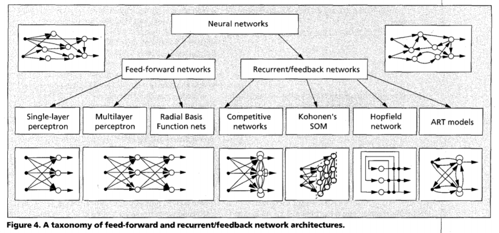
A. K. Jain, J. Mao, and K. M. Mohiuddin. Figure. Artificial neural networks: A tutorial. Computer. Vol. 29 No. 3. Pp. 31-44. 1996.
An NN Taxonomy
Recurrent/feedback neural networks
- The network includes backward connections.
- The graph representation of the network has cycles.
- Example of this class of networks includes the Hopfield network and the RNN.
Feed-forward networks
- Information only flows in one direction.
- They can be represented as acyclic graphs.
- Examples of this class of networks includes the single-layers perceptron and the multi-layer perceptron.
Hopfield network
Network architecture
-
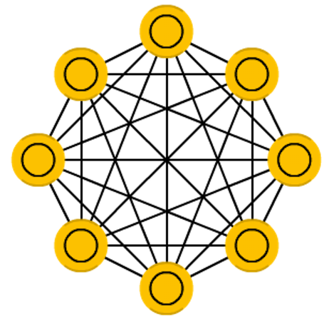
Figure credit. Neural network zoo.
Characteristics
- One of the first examples of (recurrent) networks whose weights are bidirectional.
- Inspired in the spin glass theory from Physics.
- A fully connected NN with binary thresholding neural units.
- Exhibits the content-addressable memory property.
- Typically applied to memorize the state of data.
J. J. Hopfield. Neural networks and physical systems with emergent collective computational abilities. Proceedings of the National Academy of Sciences, 79(8):2554–2558. 1982.
Hopfield network
Network architecture in time
-
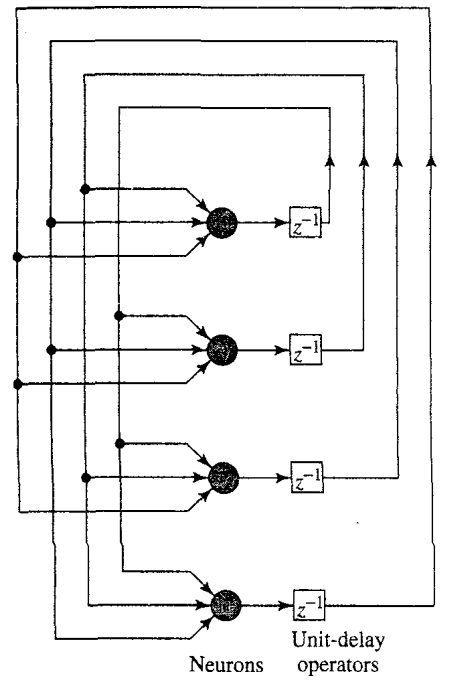
Characteristics
- Consists of a set of neurons and a set of units forming a multiple loop feedback system.
- The output of the neuron is fed back, via a unit delay element to each of the other neurons.
- The matrix of synaptic weights is symmetric.
S. Haykin Neural Networks. A Comprehensive Foundation. Eastern Economy Edition. Second Edition. 2007.
Hopfield network application
Content addressable memory
The primary function of a content-addressable memory is to retrieve a pattern (item) stored in memory given an incomplete or noisy version of that pattern.
Given sufficient partial information the content addressable memory will be able to retrieve the pattern.
A content-addressable memory is therefore error correcting.
The Hopfield network works, by defining an energy function whose fixed points correspond to the patterns to be stored.
S. Haykin Neural Networks. A Comprehensive Foundation. Eastern Economy Edition. Second Edition. 2007.
Hopfield network
Energy model
\[ E = - \frac{1}{2} \sum_{i,j} s_is_jw_{i,j} - \sum_i s_i b_i \]
\(s_i\): is the state of unit \(i\) (initially, the input \(x_i\))
\(b_i\): denotes the bias applied externaly to neuron \(i\)
\(i,j\): indices of the units
\(w_{i,j}\): bidirectional weight between neurons \(i\) and \(j\)
Example Hopfield network (four variables)
State space
\( s^1 = (-1,-1,-1,-1) \)
\( s^2 = (-1,-1,-1,1) \)
\( \dots \)
\( s^{16} = (1,1,1,1) \)
Weight matrix
\[ W = \begin{pmatrix} 0& 2& 2& 0\\ 2& 0& -2& -2\\ 2& -2& 0& 0\\ 0& -2& 0& 0 \end{pmatrix} \]
Hopfield network
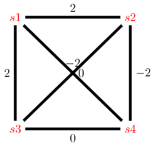
Energy model for the Hopfield network example
Representation
\( s^1 = (-1,1,1,1) \)
\( s^2 = (-1,-1,1,-1) \)
Energy computation example
\[ \begin{align} E(s^1) &=& -1* (-1*1*2+ -1*1*2 \\ &+& -1*1*0 + 1*1*-2 \\ &+& 1*1*-2 + 1*1*0 ) \\ &=& -1*-8= 8 \end{align} \]
\( E(s^2) = ? \)
Energy model
\[ E = - \frac{1}{2} \sum_{i,j} s_i s_j w_{i,j} \]
Weight matrix
\[ W = \begin{pmatrix} 0& 2& 2& 0\\ 2& 0& -2& -2\\ 2& -2& 0& 0\\ 0& -2& 0& 0 \end{pmatrix} \]
Hopfield network
Update rule
\( s_i(t+1) = sign(\sum_j w_{ij} s_j(t) +b_i) \)
\[ sign(x) = \begin{cases} 1, & \mbox{if } x \geq 0 \\ -1, & \mbox{otherwise} \end{cases} \]
Retrieval phase (inference)
- To infer the output, given an input state, the NN checks if inverting the state of a unit decreases the energy.
- Inference can be done using asynchronous or synchronous updates. In the first case, every time that an improving unit is found, it is inverted.
- The state of the network is updated until a fixed stated is found, i.e., no change in the state configuration.
S. Haykin Neural Networks. A Comprehensive Foundation. Eastern Economy Edition. Second Edition. 2007.
Hopfield network example (four variables)
Update rule
\( s_i(t+1) = sign(\sum_j w_{ij} s_j(t)) \)
Asynchronous update example
\( s^1(t) = (-1,1,1,1). E(s^1(t))=8. \; i=3 \)
\(s^1_3(t) = sign( w_{3,1}*s^1_1 + w_{3,2}*s^1_2 + w_{3,4}*s^1_4)=-1\)
\( s^2(t) = (-1,1,-1,1). E(s^2(t))=0. \; i=1 \)
\(s^2_1(t) = sign( w_{1,2}*s^2_2 + w_{1,3}*s^2_3 + w_{1,4}*s^2_4)=1\)
\( s^3(t) = (1,1,-1,1). E(s^3(t))=0. \; i=4 \)
Weight matrix
\[ W = \begin{pmatrix} 0& 2& 2& 0\\ 2& 0& -2& -2\\ 2& -2& 0& 0\\ 0& -2& 0& 0 \end{pmatrix} \]
Hopfield network
Hopfield network
Update rule
\( w_{i,j} = \frac{1}{N} \sum_{k=1}^{N} (s^k_i)(s^k_j) \)
Storage phase (learning)
- Let us assumed a set of $N$ data vectors that want to be memorized. They are called fundamental memories.
- The weight \( w_{i,j} \) is computed as the average among all \(k \in 1\dots N\) of the product of \(s_i^k\) and \(s_j^k \).
- For \( i=j \), \( w_{i,j}=0 \).
S. Haykin Neural Networks. A Comprehensive Foundation. Eastern Economy Edition. Second Edition. 2007.
Hopfield network (Learning)
Learning rule for weights
\( w_{i,j} = \frac{1}{N} \sum_{k=1}^{N} (s^k_i)(s^k_j) \)
Weight matrix
\[ W = \begin{pmatrix} 0& 1& 1& 1& -1& -1& 1& 1& 1\\ 1& 0& 1& 1& -1& -1& 1& 1& 1\\ 1& 1& 0& 1& -1& -1& 1& 1& 1\\ 1& 1& 1& 0& -1& -1& 1& 1& 1\\ -1& -1& -1& -1& 0& 1& -1& -1& -1\\ -1& -1& -1& -1& 1& 0& -1& -1& -1\\ 1& 1& 1& 1& -1& -1& 0& 1& 1\\ 1& 1& 1& 1& -1& -1& 1& 0& 1\\ 1& 1& 1& 1& -1& -1& 1& 1& 0 \end{pmatrix} \]
Input (letter C)
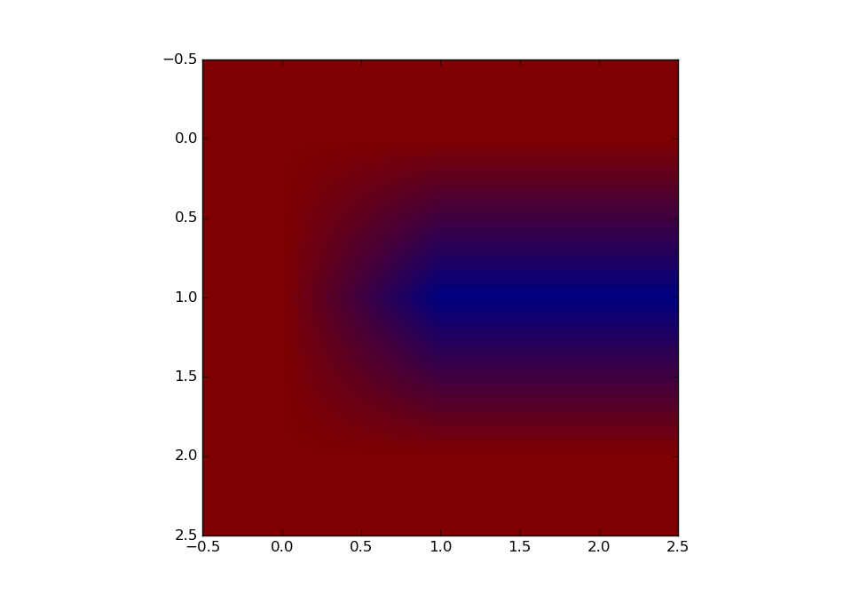
Representation
\( s^1 = (1,1,1,1,-1,-1,1,1,1) \)
Hopfield network (Learning)
Hinton maps C-letter
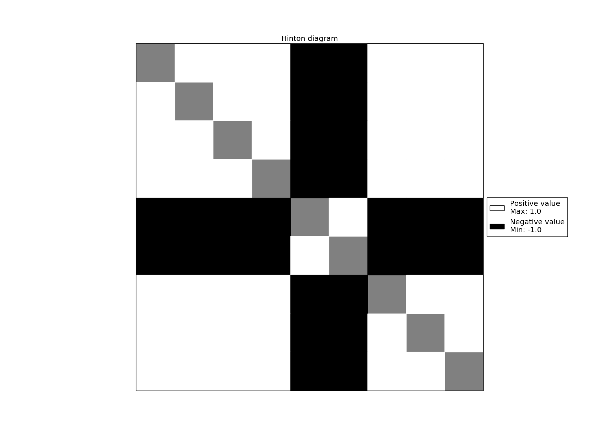
Weight matrix
\[ W = \begin{pmatrix} 0& 1& 1& 1& -1& -1& 1& 1& 1\\ 1& 0& 1& 1& -1& -1& 1& 1& 1\\ 1& 1& 0& 1& -1& -1& 1& 1& 1\\ 1& 1& 1& 0& -1& -1& 1& 1& 1\\ -1& -1& -1& -1& 0& 1& -1& -1& -1\\ -1& -1& -1& -1& 1& 0& -1& -1& -1\\ 1& 1& 1& 1& -1& -1& 0& 1& 1\\ 1& 1& 1& 1& -1& -1& 1& 0& 1\\ 1& 1& 1& 1& -1& -1& 1& 1& 0 \end{pmatrix} \]
Hopfield network (Learning)
Weight rule
\( w_{i,j} = \frac{1}{N} \sum_{k=1}^{N} (s^k_i)(s^k_j) \)
Weight matrix
\[ W = \begin{pmatrix} 0& 1& 1& 0& 0& -1& 0& 1& 0\\ 1& 0& 1& 0& 0& -1& 0& 1& 0\\ 1& 1& 0& 0& 0& -1& 0& 1& 0\\ 0& 0& 0& 0& -1& 0& 1& 0& 1\\ 0& 0& 0& -1& 0& 0& -1& 0& -1\\ -1& -1& -1& 0& 0& 0& 0& -1& 0\\ 0& 0& 0& 1& -1& 0& 0& 0& 1\\ 1& 1& 1& 0& 0& -1& 0& 0& 0\\ 0& 0& 0& 1& -1& 0& 1& 0& 0 \end{pmatrix} \]
Input (letters C and T)
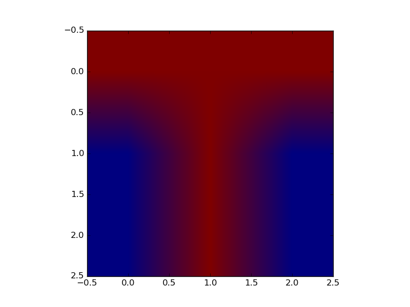
Representation
\( s^1 = (1,1,1,1,-1,-1,1,1,1) \)
\( s^2 = (1,1,1,-1,1,-1,-1,1,-1) \)
Hopfield network (Learning)
Hinton maps C and T letters
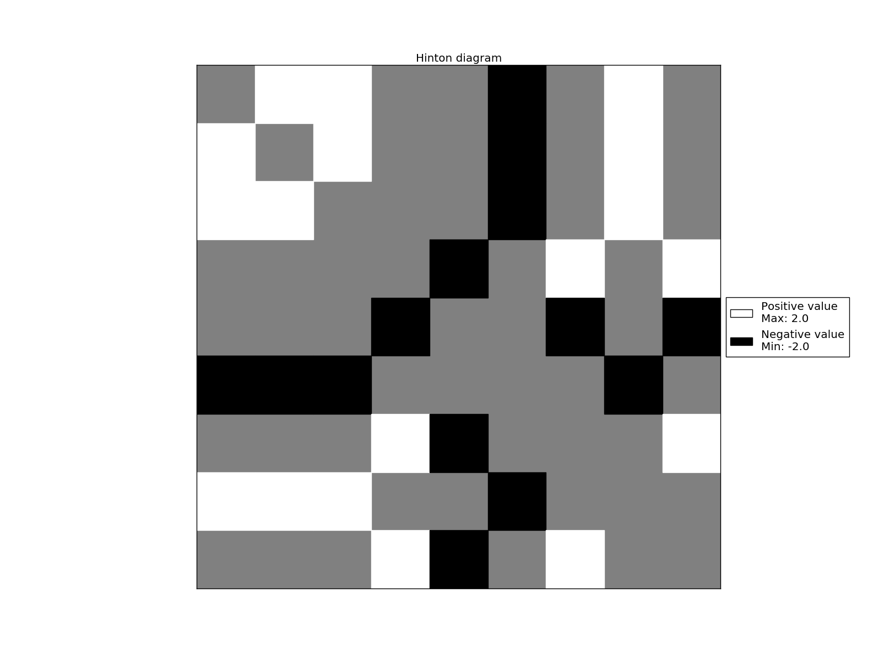
Weight matrix
\[ W = \begin{pmatrix} 0& 1& 1& 0& 0& -1& 0& 1& 0\\ 1& 0& 1& 0& 0& -1& 0& 1& 0\\ 1& 1& 0& 0& 0& -1& 0& 1& 0\\ 0& 0& 0& 0& -1& 0& 1& 0& 1\\ 0& 0& 0& -1& 0& 0& -1& 0& -1\\ -1& -1& -1& 0& 0& 0& 0& -1& 0\\ 0& 0& 0& 1& -1& 0& 0& 0& 1\\ 1& 1& 1& 0& 0& -1& 0& 0& 0\\ 0& 0& 0& 1& -1& 0& 1& 0& 0 \end{pmatrix} \]
Hopfield network
Energy model
\[ E = -\frac{1}{2} \sum_{i,j} s_i s_j w_{i,j} \]
Weight matrix
\[ W = \begin{pmatrix} 0& 1& 1& 0& 0& -1& 0& 1& 0\\ 1& 0& 1& 0& 0& -1& 0& 1& 0\\ 1& 1& 0& 0& 0& -1& 0& 1& 0\\ 0& 0& 0& 0& -1& 0& 1& 0& 1\\ 0& 0& 0& -1& 0& 0& -1& 0& -1\\ -1& -1& -1& 0& 0& 0& 0& -1& 0\\ 0& 0& 0& 1& -1& 0& 0& 0& 1\\ 1& 1& 1& 0& 0& -1& 0& 0& 0\\ 0& 0& 0& 1& -1& 0& 1& 0& 0 \end{pmatrix} \]
Local optima of the energy
\( s^1 = (1,1,1,1,-1,-1,1,1,1). \; E(s^1) = -16 \) .
\( r^1 = ( \) \(-1\) \(,1,1,1,-1,-1,1,1,1). \; E(r^1) = -8 \)
\( r^2 = (1, \)\(-1\)\(,1,1,-1,-1,1,1,1). \; E(r^2) = -8 \)
\( r^3 = (1,1,-1,1,-1,-1,1,1,1). \; E(r^3) = -8 \)
\( r^4 = (1,1,1,-1,-1,-1,1,1,1). \; E(r^4) = -10 \)
\( r^5 = (1,1,1,1,1,-1,1,1,1). \; E(r^5) = -10 \)
\( r^6 = (1,1,1,1,-1,1,1,1,1). \; E(r^6) = -8\)
\( r^7 = (1,1,1,1,-1,-1,-1,1,1). \; E(r^7) = -10 \)
\( r^8 = (1,1,1,1,-1,-1,1,-1,1). \; E(r^8) = -8 \)
\( r^{9} = (1,1,1,1,-1,-1,1,1,-1). \; E(r^9) = -10 \)
Hopfield network
Limitations
- Local optima and low memory capacity
- Synchronous and asynchronous methods can lead to local optima (the energy is not minimized).
- Synchronous methods can increase the energy.
Boltzmann machines
Network architecture
-
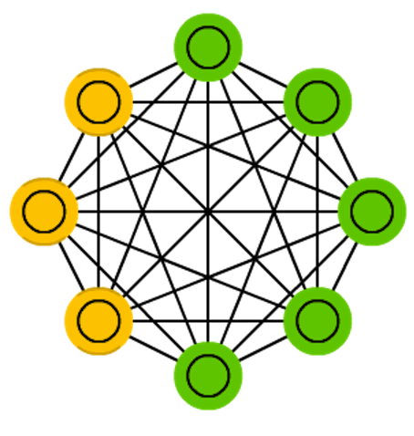
Figure credit. Neural network zoo.
Characteristics
- A stochastic with-hidden-unit version of a Hopfield Network.
- The model conceptually splits into the visible part and the hidden part.
- Only visible units are connected with data.
- Hidden units are used to assist visible units to describe the distribution of data.
- Uses the Boltzmann distribution, extensively applied in statistical physics.
D. H. Ackley, G. E. Hinton, and T. J. Sejnowski. A learning algorithm for Boltzmann machines. Cognitive science, 9(1):147–169, 1985.
Boltzmann machines
Applications
- Pattern recognition: The latent features produced by the network can be used as descriptors of the data.
- Probabilistic modeling: It can learn the distribution of the data and detect outliers.
- Optimization: Combinatorial optimization problems can be directly mapped onto the structure of a Boltzmann machine by choosing the right connections.
E. H. L. Aarst and J. H. M. Korst. Boltzmann machines and their applications. International Conference on Parallel Architectures and Languages Europe. Springer, Berlin, Heidelberg, 1987.
Boltzmann Machine example (four variables)
State space
\( s^1 = (-1,-1,-1,-1) \)
\( s^2 = (-1,-1,-1,1) \)
\( \dots \)
\( s^{16} = (1,1,1,1) \)
Weight matrix and network
\[ W = \begin{pmatrix} 0& 2& 2& 0 & 1 & 1 \\ 2& 0& -2& -2 & -1& 2 \\ 2& -2& 0& 0 & 2 & 0 \\ 0& -2& 0& 0 & -1& 0 \\ 1& -1& 2& -1 & 0 & 1 \\ 1& 2& 0& 0 & 1 & 0 \end{pmatrix} \]
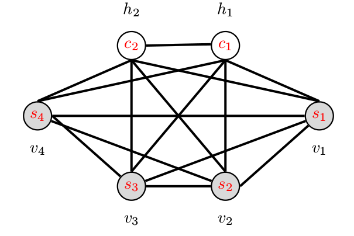
Boltzmann machine
Energy function
\[ E(v,h) = -\sum_i v_ib_i -\sum_k h_k d_k -\sum_{i,j} v_iv_jw_{i,j} -\sum_{i,k} v_ih_k w_{i,k} -\sum_{k,l} h_kh_lw_{k,l} \]
\( v \): visible units.
\( h \): hidden units.
\( w \): weights.
\( i,j,k,l \): indices of the units.
Boltzmann machine
Update rule Boltzmann machine
\( z_i(t) = b_i + \sum_j w_{ij} s_j(t) \)
\( p(s_i(t+1)=1) = \frac{1}{1+e^{-z_i}} \)
\( p(s_i(t+1)=-1) = 1-\frac{1}{1+e^{-z_i}} \)
Update rule Hopfield network
\( s_i(t+1) = sign(\sum_j w_{ij} s_j(t) + b_i) \)
\[ sign(x) = \begin{cases} 1, & \mbox{if } x \geq 0 \\ -1, & \mbox{otherwise} \end{cases} \]
Boltzmann machines
Why to add a stochastic factor to a Hopfield network?
- Using probabilities helps the learning procedure to scape from local optima.
- Set transition probabilities to move from the current state.
Why to add a hidden layer to a Hopfield network?
- The hidden units act as latent variables (features).
- To model distributions over visible state vectors that cannot be modelled by direct pairwise interactions between the visible states.
Boltzmann machines
Boltzmann distribution
The probability distribution of any global state is computed as: \[ p({\bf{v}},{\bf{h}}) = \frac{e^{-E({\bf{v}},{\bf{h}})}}{Z}, \]
where \(Z\) is the normalizing constant: \[ Z = \sum_{{\bf{v}},{\bf{h}}} e^{-E({\bf{v}},{\bf{h}})} \]
D. H. Ackley, G. E. Hinton, and T. J. Sejnowski. A learning algorithm for Boltzmann machines.Cognitive science, 9(1):147–169. 1985.
Boltzmann machines
Marginal probabilities
The probabilities of visible units are the sum of the probabilities of all the joint configurations that contain them: \[ p({\bf{v}}) = \sum_{{\bf{h}}} p({\bf{v}},{\bf{h}}) = \frac{\sum_{{\bf{h}}} e^{-E({\bf{v}},{\bf{h}})}}{Z}. \]
D. H. Ackley, G. E. Hinton, and T. J. Sejnowski. A learning algorithm for Boltzmann machines.Cognitive science, 9(1):147–169. 1985.
Boltzmann machines
Model learning
- Estimate the parameters of the NN that maximize the likelihood of the observed data.
- One possibility is to do gradient descent of the log of the likelihood.
- Expressions for the gradient of the likelihood are derived.
- Approximate methods such Markov Chain Monte Carlo (MCMC) optimization are used.
- Still, computing the approximation can be computationally costly.
D. H. Ackley, G. E. Hinton, and T. J. Sejnowski. A learning algorithm for Boltzmann machines.Cognitive science, 9(1):147–169. 1985.
Restricted Boltzmann machines
Network architecture
-
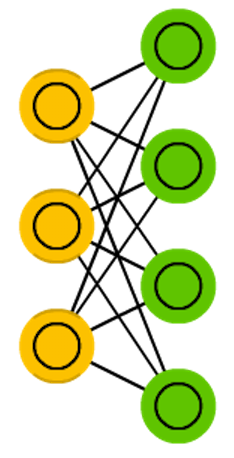
Figure credit. Neural network zoo.
Characteristics
- Originally known by Harmonium.
- There is no connections either between visible units or between hidden units.
- The structure of the model becomes a bipartite graph.
- Training methods similar to those used for Boltzmann machines could be used.
- However, other methods (to be covered later in the course) could be used.
P. Smolensky. Information processing in dynamical systems: Foundations of harmony theory. Technical report, DTIC Document, 1986.
Restricted Boltzmann Machine example (four variables)
State space
\( s^1 = (-1,-1,-1,-1) \)
\( s^2 = (-1,-1,-1,1) \)
\( \dots \)
\( s^{16} = (1,1,1,1) \)
Weight matrix
\[ W = \begin{pmatrix} 0& 0& 2& 0 & 1 & 1 \\ 0& 0& -2& -2 & -1& 2 \\ 2& -2& 0& 0 & 0 & 0 \\ 0& -2& 0& 0 & 0 & 0 \\ 1& -1& 0& 0 & 0 & 0 \\ 1& 2& 0& 0 & 0 & 0 \end{pmatrix} \]
Network
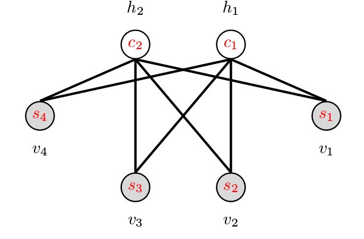
Restricted Boltzmann machine
Energy function
\[ E(v,h) = -\sum_i v_ib_i -\sum_k h_k d_k -\sum_{i,k} v_ih_k w_{i,k} \]
\( v \): visible units.
\( h \): hidden units.
\( w \): bidirectional weights.
\( i,k \): indices of the units.
Restricted Boltzmann machines
Difference to Boltzmann machines
The visible nodes are conditionally dependent among them given the hidden nodes.
The hidden nodes are conditionally dependent among them given the visible nodes.
Boltzmann distribution
The probability distribution of any global state is computed as: \[ p({\bf{v}},{\bf{h}}) = \frac{e^{-E({\bf{v}},{\bf{h}})}}{Z}, \]
where \(Z\) is the normalizing constant: \[ Z = \sum_{{\bf{x}},{\bf{y}}} e^{-E({\bf{v}},{\bf{h}})} \]
Marginal probabilities
The probabilities of visible units are the sum of the probabilities of all the joint configurations that contain them: \[ p({\bf{v}}) = \sum_{{\bf{h}}} p({\bf{v}},{\bf{h}}) = \frac{\sum_{{\bf{h}}} e^{-E({\bf{v}},{\bf{h}})}}{Z}. \]
Restricted Boltzmann machines (learning)
Negative phase
Given the hidden states, the visible states are reconstructed using \( \phi \) according to: \[ p(v_i|{\bf{h}}) = \phi \left( \sum_j w_{i,j} h_j -b_i \right), \]
Update weights and biases
Weights and biases are updated as: \[ \begin{align} w_{i,j}^{\prime} &=& w_{i,j} + \eta \left( \langle v_i h_i \rangle_O - \langle v_i h_i\rangle_S \right) \\ b_{i}^{\prime} &=& b_{i} + \eta \left( \langle v_i \rangle_O - \langle v_i \rangle_S \right) \\ d_{i}^{\prime} &=& d_{i} + \eta \left( \langle v_i \rangle_O - \langle v_i \rangle_S \right) \end{align} \]
where \(\eta\) is the learning rate, \(\langle \rangle_O\) comprises the original states of the neurons and \( \langle \rangle_S\) is the expected states of the neurons after \( S \) step reconstruction.
Contrastive divergence
- Learning method used to learn RBMs.
- It has two phases: positive and negative.
- The process involving these two phases is repeated \(S\) times.
Positive phase
The inputs are rendered into the visible units. The hidden states are determined using Gibbs sampling according to: \[ p(h_i|{\bf{v}}) = \phi \left( \sum_i w_{i,j} v_i - d_j \right), \]
where \(\phi({\bf{x}}) \) is the logistic function.